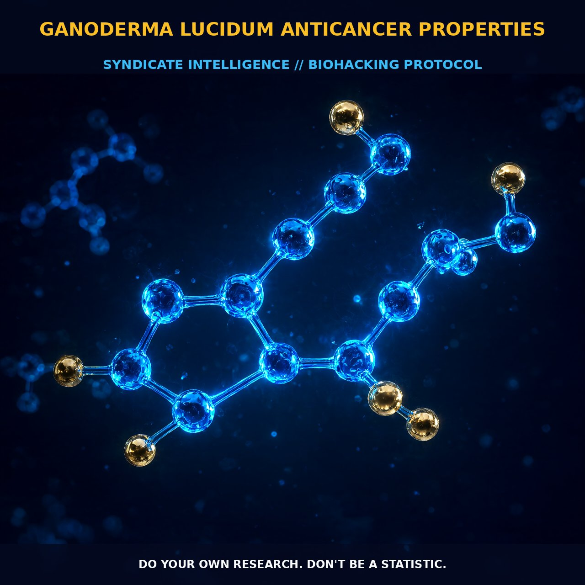

Harnessing Reishi for Anticancer Properties

The Mechanism
Ganoderma lucidum, commonly known as Reishi, is a medicinal fungus with a rich history in traditional Asian medicine. It is valued for its extensive range of bioactive ingredients, including polysaccharides, triterpenoids, meroterpenoids, nucleotides, proteins, alkaloids, and sesquiterpenoids.
These components contribute to a wide array of pharmacological effects, particularly in immune modulation, cancer suppression, and neuroprotection. The primary bioactive component of Reishi that has been extensively studied for its anticancer properties is the β-1,3;1,6 D-glucan polysaccharide. This polysaccharide has been shown to activate innate immune responses and modulate immune cell populations, including CD3+, CD4+, CD8+ T-lymphocytes, as well as natural killer cells.
The immune-modulatory properties of β-glucan from Reishi have been demonstrated in both laboratory and clinical settings, with significant enhancements observed in immune cell populations in healthy adult volunteers. Reishi's polysaccharides and triterpenoids are known to interact with various immune cells and signaling pathways to enhance the body's defense mechanisms. For instance, the polysaccharides stimulate the production of cytokines such as interleukin-6 (IL-6) and tumor necrosis factor-alpha (TNF-α), which play critical roles in immune responses.
Additionally, the triterpenoids in Reishi can inhibit the proliferation of cancer cells by modulating intracellular signaling pathways involved in cell cycle regulation and apoptosis. These mechanisms collectively contribute to the observed anticancer effects of Reishi.
The Biological Leverage
The biological leverage of Ganoderma lucidum in anticancer applications is multifaceted, involving immune modulation, gut microbiota regulation, and direct cytotoxic effects on cancer cells. Reishi polysaccharides have been shown to modulate gut microbiota, thereby improving gut barrier function and reducing inflammation. This is particularly important in the context of cancer, as gut dysbiosis and inflammation have been linked to the development and progression of various cancers.
Moreover, Reishi's bioactive components can directly target cancer cells through various mechanisms. For example, triterpenoids in Reishi can inhibit the proliferation of cancer cells by modulating the PI3K/AKT and MAPK pathways, which are crucial for cell survival and proliferation. Additionally, Reishi polysaccharides can induce apoptosis in cancer cells by activating caspase pathways and upregulating pro-apoptotic genes such as Bax and downregulating anti-apoptotic genes such as Bcl-2. This apoptosis induction is a critical mechanism by which Reishi contributes to the suppression of tumor growth and metastasis.
Furthermore, Reishi polysaccharides have been shown to enhance the phagocytic activity of microglia, the immune cells in the brain. By modulating microglial behavior, Reishi can reduce neuroinflammation and improve neuroprotection, which is particularly relevant in the context of cancers that metastasize to the brain. The anti-inflammatory effects of Reishi contribute to a more favorable immune environment, supporting the body's ability to mount an effective response against cancer.
Tactical Implementation
For tactical implementation of Reishi in an anticancer regimen, it is essential to consider the dosage and timing of administration. Human dosing is not well established, but typically, low-to-moderate amounts of Reishi extract are used. A daily intake of 1-3 grams of Reishi extract is often recommended to achieve the desired immune-modulatory and anticancer effects. This dosage range can be adjusted based on individual tolerance and response.
The timing of administration can be optimized by taking Reishi in the morning or early afternoon, allowing the bioactive compounds to exert their effects over the course of the day. Stacking Reishi with other immune-modulating agents can enhance its efficacy. For instance, combining Reishi with turkey tail (Trametes versicolor) polysaccharides can provide synergistic benefits, as both mushrooms contain bioactive β-glucans that enhance immune function. Similarly, incorporating Cordyceps sinensis, which is known for its adaptogenic properties, can further support the body's resilience against stressors, including those induced by cancer treatments. The synergistic effects of these mushrooms can create a robust immune environment conducive to anticancer activity.
Timing the intake of Reishi relative to meals can also influence its absorption and efficacy. Taking Reishi on an empty stomach can enhance its bioavailability, allowing the bioactive compounds to reach the bloodstream more efficiently. However, some individuals may find this approach too stimulating and prefer to take Reishi with a light meal to reduce potential digestive discomfort. Additionally, rotating Reishi with other medicinal mushrooms can provide a diverse range of bioactive compounds, enhancing overall immune support and reducing the risk of tolerance or adaptation to a single compound.
Prostar Life Hack
Stack Reishi with turkey tail and Cordyceps sinensis for synergistic immune modulation and anticancer effects. Take Reishi on an empty stomach in the morning or early afternoon to optimize absorption and efficacy.
[ AUTHOR: LEAD TECHNICAL RESEARCHER ]